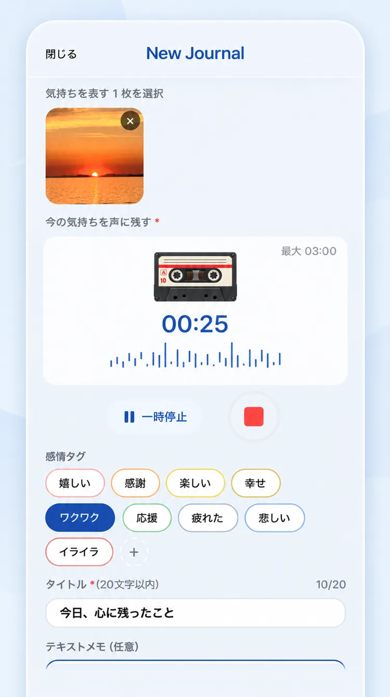
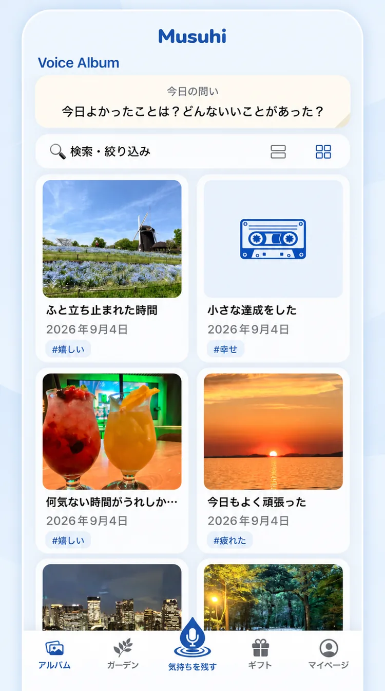
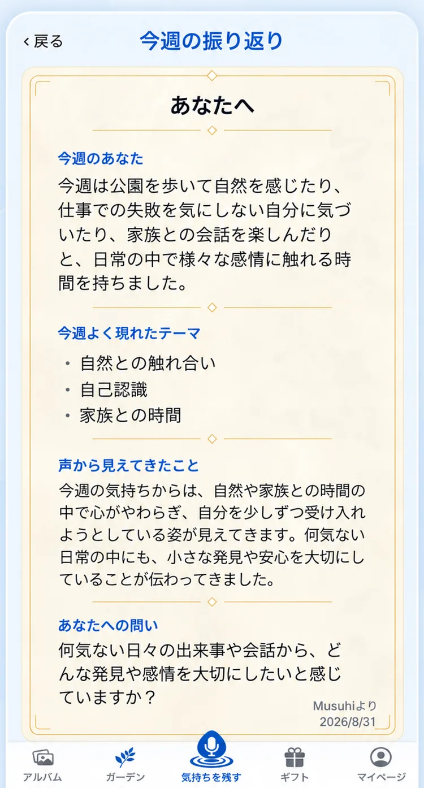
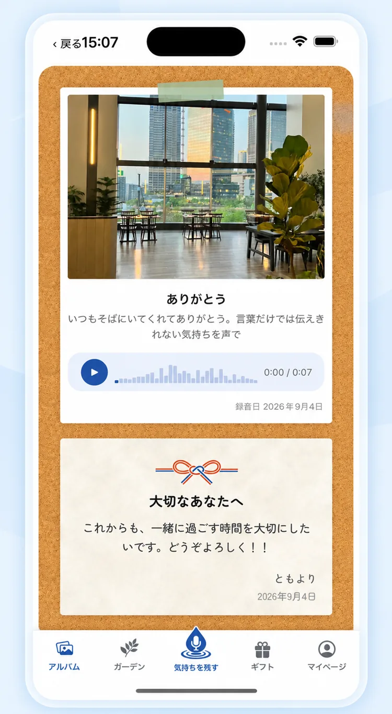
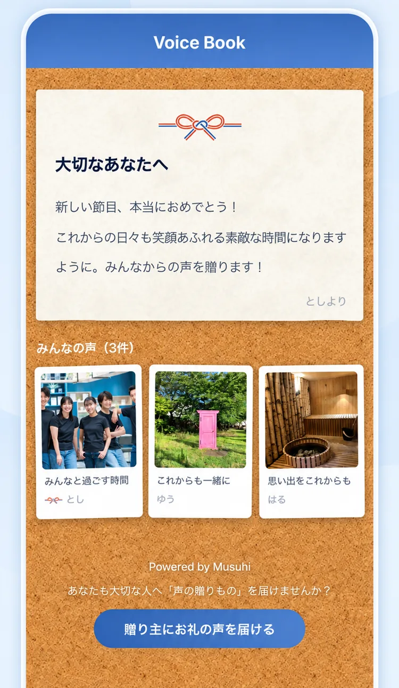
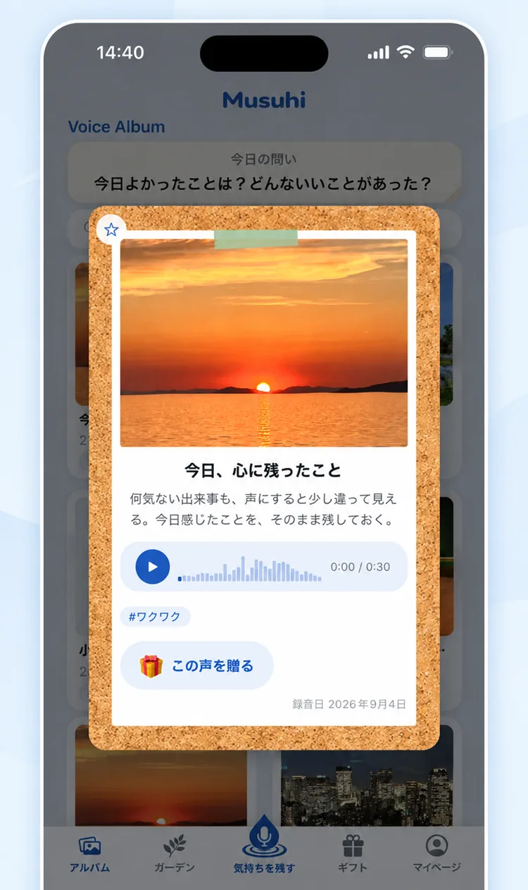
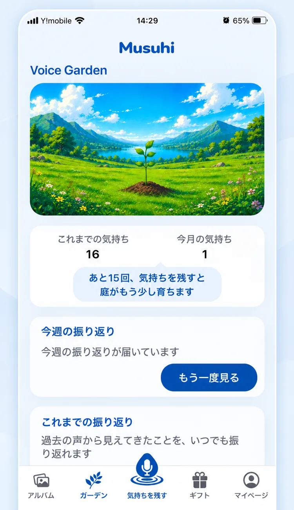

01
残す
Voice Album
その時に感じた気持ちや出来事を、声と写真で残す
言葉だけではこぼれてしまう感情まで、その瞬間の記録として積み重ねていきます
Musuhiは、その時に感じた気持ちを声と写真で残し、AIと振り返りながら
自分では気づかなかった自分を知る、そして残した声は、
大切な人へ贈ることもできる
ジャーナリング型ライフログサービスです
音声ジャーナリングで、
心が豊かになる新しい習慣を
One Moment. One Voice.
写真も、文字も残る
でも、その時の気持ちは、
残りにくい
残るもの
スマートフォンには写真や動画が残る
SNSには投稿が残る
出来事の記録は、いくつも積み重なっていく
残りにくいもの
「あの日、自分は何を感じていたんだろう。」
誰かに伝えたかった想い。嬉しかったこと、悔しかったこと、感謝したこと、心が揺れたこと。その瞬間に確かにあった感情は、意外なほど残っていません。
写真や動画には、その瞬間の景色や姿を残せます。一方で、自分の気持ちや、まだ言葉になりきっていない想いを残したいとき、カメラに向かって話すのは少し照れくさく感じることもあります。声なら、誰かに見せるためではなく、自分に話しかけるように、その時の感情を自然に残せます。
声なら、自分に話しかけるように、その時の気持ちを残せる
あとから聞き返したとき、言葉だけでは思い出せなかった、あの日の自分の気持ちまで振り返れる
だからMusuhiは、声で残すジャーナリングに着目しました
声だから残せて、声だから伝わる
Musuhiは、残す・振り返る・贈るという
3つの体験で、
日々の気持ちを大切に重ねながら、毎日を少しずつ豊かにしていきます
01
Voice Album
その時に感じた気持ちや出来事を、声と写真で残す
言葉だけではこぼれてしまう感情まで、その瞬間の記録として積み重ねていきます
02
Weekly Reflection
1週間の声をAIと振り返り、自分では気づかなかった感情や傾向に気づく
今の自分を少し深く知り、自分の気持ちとやさしく向き合うきっかけに
03
Voice Gift
大切な人へ、声にのせて気持ちを贈る
あなたの声で届けるVoice Gift
みんなの声を集めて、ひとつの贈りものとして届けるVoice Book
残す・振り返る・贈る——声を通して
過去の自分・未来の自分・大切な人が結ばれていく
それが、Musuhiです
Musuhiのアプリ体験
感じたことを
声と写真でそのまま残す

積み重ねた気持ちを
日々の記録に

1週間の声から
気づかなかった自分を知る

伝えたい気持ちを
大切な人へ

みんなの想いを
ひとつの贈りものに

使い続けるほど、育っていく
残した声は、ひとつのMomentとして
形に残り、積み重ねるほど育っていきます
残した声は
ひとつのMomentとして形に残る

積み重ねた気持ちが
育っていく

私の父は、幼い頃の私へ向けて、「敏康 成長記」と書かれたカセットテープを残してくれていました。
そこには、写真では伝わらない——父の声、笑い方、話す間、その時の感情や想いが、そのまま残っていました。
声には、その人の想いまで残る
人は、直接面と向かっては言わないことでも、
何かを媒介することで伝えやすくなる
年月が経ってからその声を聞いたとき、懐かしさとあわせて、父の想いや、自分が大切にされていたことまで伝わってくるように感じました。
声は、時間が経っても、その人の気持ちまで残してくれる。
そして声には、人の心を支え、前を向く力をくれることがあるのだと感じたことを、今でも覚えています。
この体験が、Musuhiの原点です
Musuhi 中村敏康
嬉しかったこと 感謝したこと 挑戦したこと 心が少し揺れたこと
その瞬間を、声と写真で残してみませんか
今日の気持ちを、あなたの最初のMomentとして残せます
One Moment. One Voice.

声からはじまる、自分との対話 人とのつながり